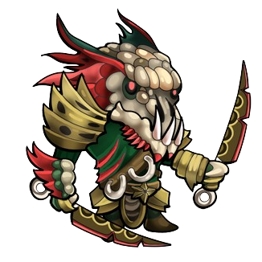
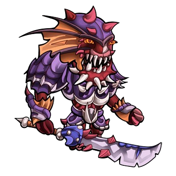
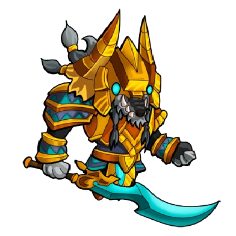
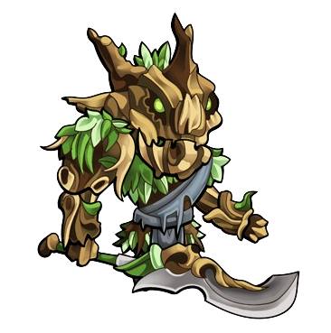
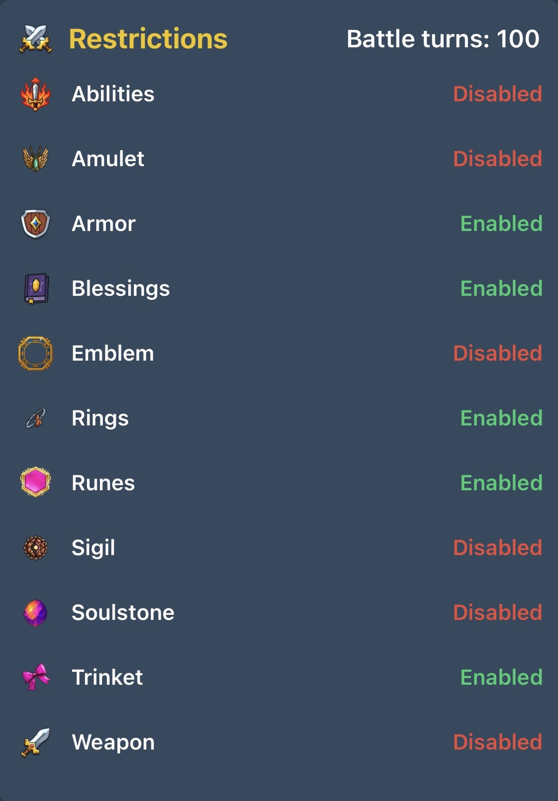
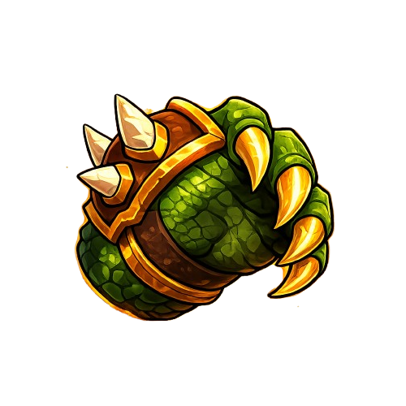
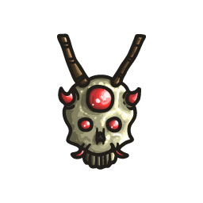
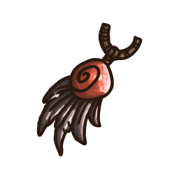
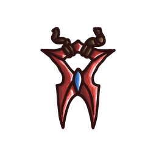
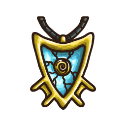

Harpagia Guide - Written & Published by BienChien and Atlas
›Hello! I’m writing this guide to serve as my opinionated guide as to overall progression and strategies to Harpagia. Feel free to disregard any opinion made in this, as there’s lots of different strategies and overall ways to play the game. This will not be a speedrun guide, nor a min-max guide, but my info will be based on things I’ve learned from other players as well as my own experience, and overall it’ll be solid info. Please use the index on the left side of the screen to jump to various sections quickly, or use the search function above to search for any keyword you're looking for, scroll through the result list, and click on the result to jump to that section/paragraph. If you're on mobile, click the menu button (top left), or magnifier glass (top right) to access these functions. Press the magnifier glass a second time to collapse it. As the game is updated, the early game changes frequently, so I will attempt to update the guide as often as I can. Updated on: May 20, 2026.
Early Game
›In the early game, you’re given many different options. Grind out a few skill levels all around! Zen, Sanctum, Hideout, School and Imbibing all require some amount of gold to grind, so it’s not a bad idea to get a few levels into begging first. Mining, forging, fishing and cooking are all fairly self-explanatory, and mostly offer materials for forging and upgrading weapons and armor for battle. Imbibing can for the most part be ignored at this point of the game as it gives a battle-focused boost, and while you’ll be doing battle soon, the boost it gives is pretty limited. It’s worth noting that, for the most part, the ticket exchange shop and ticket vendor in the imbibing screen can mostly be ignored until deep into late-game.
Gems
Once you have a few levels all around and get a feel for the game, you’ll have a few gems to play around with (1 gem per skill level). It’s worth saving these gems and using them efficiently, as for the most part, there’s a ‘limited’ number of gems you can get overall in-game. In the early game, from rare gem triggers (1/15,000 base chance from any skilling activity), you can only expect to earn 1-10 gems daily. Once you reach late-game, the ability to earn gems opens up, and you’re able to earn 150-200 daily, but early on, all of your gems will come from levelling / Ascension Tower. The ascension tower is a new update to the game, but in total, it provides far more gems than can be earned through skilling. Max level from skilling is 3000, meaning 3000 gems. The ascension tower nets you 12,750 gems for completing normal mode, and 12,750 gems for completing hard mode. More on that later in the ascension tower section. Considering this addition to the game, and the massive change it brings as far as gem earnings compared to when I started the game, it’s hard to say how the early game looks for gem earnings now. I’ll try my best to include many of the things in the gems section, and update it accordingly, but it’ll be hard for me to gauge what the early game looks like now.
Chest Keys
Moving on, once you have a bunch of materials, give battle a go. Forge some weapons and armor, upgrade it a few times, and beat some enemies. Upon beating 5 of each enemy in a given area, you’re offered a reward. The reward from the first 4 areas are Chest Keys . There are 4 different ways to get keys in this game: Area Reward, Daily Gift, Gems, Expeditions. Use ‘em right away. (Upgrade tab -> Treasure Room), and see if you get lucky with getting the chest charms(2% chance, increase to 17% at 50 attempts. Note: It's always better to buy keys for chests than to buy the charms out-right for gems. More on this in the 'Gems' section.)
Skilling Charms
After you’ve done all of that, it’s time to grind out a bunch of gold, and move into getting the skilling charms. This should be one of the first things you do, and will offer permanent, very important bonuses. These are unlocked by reaching a certain milestone in each of the bottom 4 skills: Zen, Hideout, Sanctum, School, and can be seen how they’re achieved by checking the info-button in game. The community has created a "Solver" for 3 of the 4 skills, since Hideout is 100% luck-based. Sanctum and School solver are very self-explanatory, while Zen requires a bit of set-up and will be slightly time-consuming to obtain, but still likely faster than attempting to do it yourself. I would, however, highly recommend giving it a go! All of the charms also unlock the auto-play feature, so I’d recommend playing them and attempting to get the charms yourself first, since you’ll likely not really actively play the skills again once auto-play is unlocked. The solver can be found within the links at the very bottom of this guide. Press on Notes/Links on the bottom of the left side to get there quickly, or click the hyperlinks here. It’s worth noting that school isn’t like a rubik’s cube, and not all boards can be solved. Typically, you can reach the maximum score for any board within 5-6 moves, and it’s not too hard to figure out the puzzle without the solver active(solution guide listed below). All of these charms can be obtained within the first 4 hours of game-play, probably earlier if you really push for it.
School Solution Guide
Press a row or column(1x if there's 2+red, 2x if there's 2+yellow) if it looks like this:
🟥🟥🟥🟥
🟥🟥🟥🟨
🟥🟥🟨🟨
🟥🟥🟩🟨
🟥🟩🟨🟨
🟥🟨🟨🟨
🟨🟨🟨🟨
🟩🟨🟨🟨
🟩🟩🟥🟥
Otherwise, the row/column is maxed out! Once all are maxed, a small notification will appear at the top of the game saying "Puzzle solved". If none of the rows match ones listed above, there may be some slight adjusting to maximize a different row by messing with other ones, but don’t really worry about that unless you’re around 13 already, and can potentially hit 15 by messing with it.
General Progression
Keep moving around to various skills, since you get gems for each skill level, it’s worth getting all skills up. For a general baseline, early game, it’s not difficult to get the 6 resource-type skills to lvls 120. In general, begging will be slightly slower, and Mining will be slightly faster than the rest. The exception here is imbibing, which requires 2 steps to train and will naturally level more slowly. These skills also grant more XP the higher they get (higher-lvl resources give more XP, increasing skill level grants more resources in general). The bottom 4 charm-skills can be brought up fairly easily to the same level, around 120-130, and then they start to get really slow, since XP rates don’t increase as they level up like with the resource skills. Grind out the lowest level skill a few times, use auto-play Aura to get some free auto-play’s on the bottom 4 skills (these level up the fastest early game once auto-play is unlocked), and farm some materials to really get battle going. It’s not a bad idea to grind mining/forging up to level 100 before really getting into battle since that way you’ll be able to craft and upgrade high-level gear and overpower the enemy you’re battling easily.
Premium
If you’re interested, purchase the Premium game option! It supports the dev, and offers a few unique bonuses. First, it increases skill speed permanently to 1s, from 2s, doubling game speed in some parts of the game, and it also unlocks access to the trading feature (Other requirements needed as well, though not difficult and free to obtain). Trading is massive, and will offer many ways to interact with the community in discord and give access to good items at usually decent prices.
Offline
›This game has a pretty decent offline system. At its baseline, offline speed is equal to in-game speed, though if you have premium, in-game speed doubles while leaving offline speed at ½ speed. This can be upgraded though to be equal to in-game speed, so this game is fully-playable offline and online. The maximum offline-reward is 24hrs, and cannot be upgraded. Recently, offline battle was integrated into the game, and it’s very effective. At its base, it is 3.3x slower than battle in-game, though, once again, this can be increased to a maximum of 1.6x slower than battle in-game. Offline-battle speed is based on regular offline-skilling speed gem upgrade, so you get faster offline battle and offline skilling when upgrading it if you’re more of an offline player. Also to note, when initially purchasing it, you get 2,500 ticks (every battle action) of offline time, which equates to around 1.4hrs. At max upgrade, it’s 50,000 ticks, giving you the full 24-hour offline rewards like all other skills. It is a very MP-heavy investment to get this feature though, but it has its uses for those who can’t be always online playing.
Offline banking is a newer feature as well, allowing you to bank any offline actions exceeding 24hrs for regular skilling, and allowing you to bank any offline actions used during offline battle. This will save you the headache of waiting a long time after logging in when you have many hours spent offline doing battle, and use them later when you can leave your device to sit for a while. It is worth noting that auras no longer work for banked offline rewards, so choose the offline skill appropriately with that in mind when using banked rewards.
Auras
›Auras have received a massive change recently. You can no longer watch ads for Auras, and instead, you upgrade them by means of gems. You do not need to out-right purchase the auracle anymore, and instead, you will upgrade individual auras. Any upgrade you make to any aura will increase your total net auracle max time by 30min. This means you need to purchase at least 2 in order to use them. Upgrading any and all auras will be beneficial overall for this reason. Each aura needs to upgraded at least once in order to be used, and once purchased, can be used forever as long as you have enough time to activate it.
Aura Uptime
Activating: At level 1, activating an aura uses 60 minutes of auracle time but only runs for 30 minutes giving 50% uptime. At level 2, it costs 55mins for 30mins…etc… until at max level 7, it costs 30min of auracle time for 30min of boost for 100% uptime. For this reason, it may be worth upgrading your favourite auras to max to have a constant uptime boost going. However, even having them at level 3-4 is very strong, as for the gem price it costs, 75% uptime really isn’t bad (45min/30min at level 4). This should power you through skills without too much difficulty. For late game purposes and investment into the future, I’ll note that the most important auras late game will be: Loot, Item Upgrade, MP, Unique, Pet. You’ll use many others (unless you just stick to XP aura) during your time maxing to level 3000, but beyond that, these are the most prominent auras that will still be in play. For early game, the best aura you can upgrade is probably XP aura. It works with every skill, so you don’t need to purchase and upgrade a whole bunch of different auras as you go, and don’t need to constantly be swapping if you want to use a different skill during your aura uptime. Getting all others to levels 1-4 may be beneficial for you, but don’t spend too many gems maxing them out, as they become redundant after reaching late-game.
Aura Breakdown
-Alchemist Aura: Maybe the worst aura of the bunch, don't bother. XP Aura will be used instead of this one, always. Recommend level: 0
-Auto Play Aura: Maybe useful early game. The amount of gold this costs comes quickly though, so quickly becomes redundant. Recommend level: 0-1
-Begging Aura: This is a good one. Despite what I just said above, you'll need tons and tons of gold overall, so not a bad aura to have in your pocket. However, this aura does also become redundant late-game, typically around begging level 190+, wherein gold from battle becomes enough to stop begging. XP Aura can be used in its place if you're on a budget. Recommend level: 2
-Cooking Aura: Since this aura consumes more of your own resources, using XP aura is stronger than using cooking aura. Fairly useless overall. XP Aura can be used in its place. Recommend level: 0
-EXP aura: offers double XP to all skills. Auras for other resource skills (Mining, Forging, Fishing, etc.) offer double items, which in-turn doubles XP, since XP comes from #of resources crafted. Therefore, this aura is overall worse, but it works on all skills, granting equal XP but no double items. This is a really good well-rounded aura. It doesn’t provide the niche bonus to the bottom 4 skills that their respective auras offer. If you’re looking for a one-and-done aura and don’t have enough gems to upgrade a whole bunch of them yet, this one will offer a good bonus all around. It’s the only aura that doubles battle XP. Recommend level: 4
-Fishing Aura: Good if you want double items, and the double items are necessary if you wish to max out cooking without having to come back to fishing after reaching level 200. XP Aura can be used in its place early game though. Recommend level: 1
-Focus Aura: x1.5 the bonus that zen gives to all other skills (1% Gold from begging, 3% items from other resource-skills). At level 200, this should give a 100% Boost to gold from begging; better to just use begging aura for the same effect. At around level 75, in theory, this should give a 112% Boost to resources gained, out-performing the individual auras. I don't think the additive-multiplicative function of the bonuses actually grant it a boost this big, though I haven't strongly tested it. Likely gives closer to a 100% boost to resources and XP when zen is level 200. Recommend level: 0
- Forging Aura: Good if you want double items, though not necessary. XP Aura can be used in its place. Recommend level: 0-1
-Healing aura : Useful for attempting to fight those last couple enemies that keep defeating you to get the keys from the area bonuses. Probably not very effective for general farming, since enemies that defeat you often and take a long time to kill will give low resources/hr. Recommend level: 0
-Hideout Aura: Useful when trying to get the hideout charm, though at 1/220 chance to win, not necessary. Will well-outperform XP aura when trying to max out this skill though, so a good aura to have overall. Considering Hideout is one of the best late-game gem farms, second only to elite grinding, it can also be useful for grinding late-game, since the +2 tiles slightly increase your chance of getting gems. Recommend level: 4+.
-Insight Aura: Increases insight bonus by 2x (chance to duplicate actions in resource-skills). Can be used to get a 100% chance to double all actions late-game by using it alongside card sets. Overall, not necessary, but can be used to greatly increase gem earnings from skilling. Recommend level: 0.
-Item Upgrade Aura : This aura costs nearly 10x+ the amount of time as other auras. It is very necessary when upgrading late-game gear, though it is a heavy investment to activate. It is likely you’ll want to save up a lot of materials and then use them all at once with this aura active and do a lot of upgrading at the same time. Alternatively, if you have a premium account, you can use your daily free aura to activate this one, allowing you to use it for free. If you time your auracle right, and activate 100+minutes in some other aura before activating Item Upgrade Aura, you can carry some of the time over to use the aura for longer if necessary. Recommended level: 4-7.
-Loot Aura: After you finish your MP grind, this will be your most-used aura overall. It is the most useful aura in the current late-game. Early game players don't need this aura too much. Recommend level: 1 once reaching Frozen area, 4 after completing Infernal area, 7 once into deep late-game.
-Mining aura: Grants double items in mining. Mostly useful for doing the gauntlet. Using mining aura during the prep stage will allow you to fully max out your stats, and then switching to unique aura after the prep stage will allow you to maximize your chances of getting scroll / Blade of Aether drop. This is the optimal way to play the gauntlet, though it’ll cut heavily into your overall aura time. For the most part, XP aura can be used here. Recommend level: 1
-MP Aura: This will be your strongest early-mid game aura. Your will likely use this up until around combat level 200, and likely even a while after that. MP is used in so many parts of the game, that keeping the MP engine up and running is very necessary. In the current update, it isn't completely necessary beyond maxing MP upgrades and some orange cards though, so doesn't need to be fully maxed out. Recommend level: 5-6
-Pet Hunter Aura: Increases pet chance by 50%. This aura is useful for getting an early Fizz drop, or getting your first pet once mining is level 200 if you haven't gotten a pet drop yet, but overall won't be useful until you reach level 200 in many skills. It is the only thing that boosts pet chance after getting the 10x pet drop chance from reaching level 200 in a skill, and will be 100% necessary for maxing pink cards. Recommend level: 1 early game, 4 late-game.
-Ring Exp Aura: Rings level up relatively quickly, unnecessary aura. Recommend level: 0
-Sanctum Aura: Somewhat useful for getting the charm. Will be very useful when attempting to max out Sanctum to level 200, but not beyond that. Recommend Level: 2-4.
-School Aura: Extremely useful for getting the school charm. Will also be extremely useful when maxing school skill. Recommend level: 4-5.
-Unique Drop Aura: Very useful all around, though won't be used as much as loot aura. Particularly useful when grinding the gauntlet, and ability drops. Recommend Level: 2-4
-Zen Aura: Almost mandatory for getting the zen charm (unless using the tool) and also for maxing zen skill. The +1 makes a decent difference in XP/hr. Recommend level: 5-6.
-Gem aura/Hideout Reward aura : These are premium auras that can’t be activated by using the auracle, you can instead find them in your inventory - aura tab. They can only be obtained from daily aura reward, from purchasing auras for gems (Don’t do this), or from exchanging auras. They are strong, but not game-breaking. Feel free to use them as you get them, or save them for late-game when luck levels are higher. There is no "trick" to extending these auras. If you have another aura active and try to replace it with one of these, it will eat all remaining time and replace it with the 10 minutes that this aura grants. For reference, 1hr of gem aura will grant 20hrs of gems. 1hr of hideout-reward aura will offer 2-hrs worth of gems. It can be very difficult to obtain 6 10-min auras though, so saving them up really isn’t necessary.
Aura does work offline, though it’s very important to note that the aura MUST still be active at the time of logging in, or it won’t take any effect at all. If you have a 300min aura, and sign back in at 305 mins, the entire aura will take no effect, however, if you log in at 299 min, it will have taken effect and doubled resources or XP for the entire time. Auras do not work for banked offline actions.
Gems
›What to Spend Gems On
For the majority of the early game, you’re limited to around 2,200-2,500 Free to play Gems from skilling, and around 1,000-2,500 from the ascension tower. Early game, you can expect around 5-10 gems per day from grinding in general, mid-game 20-30, and late game gem earnings can reach the hard-limit of 200-250 gems per day, depending on which activity you’re doing. For most players' early game, I’d recommend spending all of your gems on a few things, these being Rings, Chest keys and specific gem upgrades. For rings, you’ll want to get the 3 main ones, Begging, Power, Defence/Speed/Weaponry, in that order. The first ring will cost 125 gems, the second one 250, and then 500 from then on. As far as the second battle ring, it’s up to your play style, and doesn't matter too much as you'll likely purchase all of them eventually. Speed will increase overall Kill per Hour in the grind, granting more resources, but defence will offer survivability, allowing you to go further earlier and be particularly strong when grinding the Gauntlet. Weaponry is a niche ring that will be mandatory for some builds later on to be able to hit 100% crit, and offers approximately the same DPS increase as speed ring. After that, you should get the Bronze charm. If you weren’t lucky enough to get it from the free keys, you should use gems to get it. Keys can be purchased in bundles for, I think, ⅔ of the price of purchasing directly on the chest screen, in the gem shop(Upgrade tab -> Gem Merchant -> Key Bundles) . Overall, I believe all of this will at most cost around 1,200 gems.
Chest Keys and Charms
The silver and platinum chest charms can be ignored early-game, but the gold chest charm is important. Hopefully you got it early from the free keys, but if not, it’ll take around 1,500 gems to guarantee a hit on it (Chest charm rate is 2%, at 50 chests opened, it increases to 17%, guaranteeing a charm hit within a few key uses). Note here: The expedition section of the game (Must clear infernal to unlock) can drop key fragments to make keys. However, that’s super late-game, and you’ll definitely want the charms before that, so it’s worth gemming some of them earlier on. On top of that, while you can push for Gold chest, there are some Gem Upgrades you should get first. In particular, get the begging upgrade to 50, enhanced XP to 50, battle XP to 50, and optionally, offline reward to 50(unless you’re planning to let your game play online all the time, or, alternatively, only train skills that this skill has no impact on when offline: Zen, Sanctum, Hideout, School). Some other notable gem skills are:
-Unique rate(Effective mid-game)
-Gem-trigger(VERY effective mid-late game, not so much early game. Reward on investment is very low early game(Appx. 100-150 gems earned through lucky triggers in the first 3-6 weeks of playing, meaning at max level, you’ll only earn an additional 50-75 gems on your 750 gem investment), gems probably shouldn’t go here for now.
-Enhanced skill speed(1s->0.5s at max level, fairly effective if you can't use an auto-clicker for instant button, and also boosts auto-play speed if this gem upgrade level is higher than your level in the active auto-play skill.)
-Upgrade chance(late-game).
Ignore ring exp, pet chance, card chance for now. Fishing, forging, mining skills are solid if you wanna get 'em. I say to get some upgrades to 50 and not further since at lvl 50, it starts to cost 10 gems per level; 15 at level 100; 20 at level 150.
Overall, after the bronze chest and recommended upgrades, you’ll have now used 2,200-ish gems, depending on whether you purchased the offline reward gem upgrade and how your luck was with the bronze chest. This is most of the gems that you earn from early-game skilling, but as you get further into combat, you’ll earn many more to spend from earning gems at the ascension tower.
Earning Gems
With the new release of the ascension tower, There’s a good chance early-mid game players can earn a cool 2000+ gems from it. I’d recommend using these new gems to start putting a dent into the auracle, or push for platinum chest charm. The platinum chest charm is necessary for late-game play as it applies a massive bonus to unique drop rate, upgrade chance, and gem drop rate. If you decide to go for auras instead, get all useful auras to level 1, and some of the more useful ones to levels 2-3. Having the auras running will give a big boost to overall game speed, and aren't too expensive initially.
For the most part, only buy permanent upgrades, as is with most games. Some of your gems can be used through trading with other players, and can get you some super solid items at good prices, which can help push you into late-game much quicker.(notable items: Buying high-level fish usually isn't too expensive and can help a lot with combat, buying amulet shards/upgraded amulets, buying mid-game sigils, buying abyssal gear, upgraded or base-level). You can’t trade gold, however, you can "contract" someone to upgrade your gear for you. I’d not recommend this, since you can get scammed, but there are many trustworthy players in our community who you can send your gear to, get them to upgrade it for you, and send it back for a gem price. This will however likely be quite expensive, especially if you’re looking for level 20 gear, as it costs quite a bit of aura time to use the "item upgrade aura". There’s no safeguard in place if you get scammed, so the only thing you’ll get out of it is blasting their name on the discord if someone does scam you.
MP Upgrades and Abilities
›Priority Upgrades
As you progress further into the game, you start to rack up more and more MP. Get that MP sigil up and running ASAP (requires defence level 140). Throw a few MP points around, and get all of your useful upgrades up to level 10. Get your Slayer upgrade up to 20 ASAP, obviously, as this will begin to net you 2-3m mp/hr at high levels. It’s also important to note that Veteran MP upgrade is one of few things that boosts battle XP and doesn’t cost gems, definitely worth investing in so you don’t have to use XP aura while in battle to get good XP rates. Both of the 2 imbibing-potion-type MP upgrades are insanely important, and should be maxed out ASAP as well. As far as ranking importance of MP upgrades, I’ll give my personal opinion here: Slayer, Eternal Thirst, Brewmaster, Veteran, Unscathed, Feast, Resurrection, Plunder, Last Stand, Guardian angel, Hypochondriac, Metabolism, Vampiric, Treasure seeker, Card collector, Ability conservationist, followed by the rest. That being said, don’t push each one to 20 before moving onto the next(except slayer), just a general list if you’re feeling lost. Worth noting: Elite slayer is great, and is a great way to earn gems late-game(gem drop chance increases exponentially with enemy level). However, elite enemies are particularly strong, and will often kill you several times before you can defeat them. It’s not worth having them turned on if you don’t out-scale your enemy by a lot, and definitely should be turned off when farming enemies while you’re AFK. You could potentially lose a lot of gold auto-reviving if you forget to do this.
Abilities
For abilities, don’t worry too much about them mid-game. They’re consumables, and require MP to use, which can cut DEEP into your overall MP/Hr. Lvl1 abilities drop from Frozen area, Lvl2 from Verdant, Lvl3 from infernal. There’s a few notable abilities that may be worth using (compare your KPH before and after using them and consider if the cut into your mp is worth using it for the additional KPH): Triple Strike (Lvl2 Ability) can boost DPS by a lot, and allow you to one-shot certain low level enemies. Rage/Sissify (Lvl2) can boost KPH by a lot mid game. Champion/Peon (Lvl3) are your overall strongest abilities and will be what you use late-game for bosses. Bosses have far more HP and drop more MP, so using abilities against them is super effective and doesn’t cut into your MP gains nearly as much. Ult.Pwr and Keen Eye abilities are unique. They offer one single very strong hit. This can be very effective if matched with the Pre-emptive Strike Affix on a soulstone, which can boost first-attack damage by up to 160%. By using Ult.Pwr/Keen Eye, you can increase dmg further on this attack, and almost always guarantee a crit strike, resulting in one-shotting most non-boss enemies in the game, giving ridiculous KPH rates and extraordinary MP/Hr levels. Aside from having a PEStrike build, Ult.Pwr/Keen Eye aren’t very effective abilities.
Trading
›Getting access to trading requires a premium account, a 7 day old account, and defeating abyssal yeti. Once access is granted, it’s a great way to get gems by selling items and resources to other players, and allowing you to purchase high-level items for good prices. As mentioned above, buy some high-level fish! Most endgame players have way too many, and will happily let some go for you. Aside from that, for progression boosting purposes, I’d recommend buying an upgraded amulet (level 15+), and a decent level sigil (CritDmg, power, weaponry, speed, mp, XP and loot are all desirable traits of good sigils). Both of these can probably be purchased for a total of 100-150 gems, and are super strong and can be used far earlier than you will be able to grind them (defence lvl 120 required for amulet, 140 for sigil). Listen to the warnings in trading, items can be lost if they’re not followed properly. Try not to get scammed, and feel free to ask if a price is reasonable in price-discussion before accepting a trade in DM’s. If you don’t feel like asking in the price-discussion discord channel, you can find relevant market-price info on weapons and armor in the Harpagia Cost Calculator, in the "Market Value" tab. Please note: The prices listed in the Market Value tab are based solely on past, or recent trades, and are updated manually by me. They are not set in stone, and players may offer and buy items for whatever price they want. Please only use it as a general foundation and with discretion. Pricing may change rapidly based on supply/demand. Sell/Buy for whatever price you think is fair, and try to get yourself a good deal here and there from someone who's willing to sell for a lower price!
Soulstone sets can be purchased from players, however, they will be a bit more expensive. Some higher-end soulstone sets can be purchased anywhere from 200-1,500 gems, depending on quality and seller. On the other hand, if you have spare gems and all 3 glyph slots unlocked, give it a shot. It will boost your KPH by upwards of 200%. That being said though, as soon as you unlock glyph slots, BUY SOME. Even a super cheap less useful glyph can have a power rating of 45-50, and can often be bought for 10-30 gems. That direct stat boost of 50 points can help greatly, even if the glyph doesn’t apply to the rest of your set. More on soulstones below.
I’d recommend not purchasing Viridian gear unless you’re willing to shell out several thousand gems for a maxed set. It can’t really be upgraded until you’re capable of grinding Treanth yourself, and at that point, you’ll get them as drops regardless. It’s not useful at all until around level 15, so best not to worry about purchasing it early on.
Upgrading
›Upgrade Efficiency
This deserves its own section with the change of item upgrade aura. Under new rules, item upgrade aura has become very expensive, and costs 600+minutes of aura time to use for 30 minutes. My best guess is that this was introduced to combat late-game players using their high upgrade chance to upgrade items for newer players, though that’s just a guess. Ultimately, it’s one of the best auras in the game, so it makes sense. With this change being made, it’ll be very important for new players to use this aura effectively, and save up many materials for many days and do a lot of upgrading all at once. Considering it increases upgrade chance by 50% (up to a maximum of 6x, this stat can be found on the main home screen), it’s very powerful and will save you many materials if you use it always when upgrading. This being said, it’s likely not necessary for any upgrade levels 1-15, as the chance of upgrade for this is quite high at base level.
Builds
›Gear Progression
Battle builds are fairly limited early game, and there’s not very many differing opinions on what’s best. In general, to start, push for Orichalcum build (with axe) to lvl 10-12. This will quickly be replaced by the Abyssal set(axe), which you should push to lvl 20. Abyssal armor is currently the strongest armor in the game, with the exception of viridian armor, but that’s very late-game. Since Abyssal armor won’t really be replaced, you can spend a lot of resources getting it to 20. The Axe however, will quickly be replaced by Aether Blade (Gauntlet unique drop), so it might not be worth spending all of the gold and resources getting it to 20. However, there is a niche achievement for getting the abyssal axe to level 20, and you’ll want to keep it to use when farming Xerathin boss, so it’s definitely worth keeping around and leveling a good amount. Once you have a high-level aether blade and Abyssal gear, you’ll move into bosses.
Boss Builds
Bosses have unique Weaknesses and Resistances, so you should probably use the correct weapon-type when battling them, though this will be somewhat difficult since each boss is weak to the unique weapon it drops. For Dravok, I’d recommend using the Abyssal axe instead of dagger, since you probably already have it, and it’s probably stronger than using an aether blade. The Keris dagger that the boss drops isn’t super sweet so, overall, this boss can be skipped for the time being anyways, unless you want it for completion purposes. Xerathin drops the Best weapon in the game , the Abyssal Greataxe. I say it's the best weapon, because it's the best general-use weapon you can reasonably expect to get. The elemental blade is likely a stronger general-use weapon, but because of its incredible difficult ability to obtain, greataxe is likely better still. It’ll be a long grind to max it (20k+ kills?). This weapon doesn’t give quite as much base power at max level as the Aether Blade, but because it’s an axe, it pairs with Viridian armor(provides dmg boost to axes) to become far stronger, and it also has a niche boost to Crit’s that make it stronger naturally, even without viridian. Anubis drops the Swift Blade, which is a good weapon as it'll be strong in the earlier ascension tower, since you'll likely be using abyssal armor to prevent deaths. Treanth drops the Viridian armor, which is the strongest armor in the game for regular battles, but abyssal armor is still strong for late-game ascension tower, as it’s sometimes necessary to prioritize higher defence to prevent dying. Viridian offers slightly less defence than abyssal, but it offers a damage-boost to axes that pairs with the abyssal greataxe to offer the highest DPS build in the game (Abyssal greataxe + viridian armor, exception only to elemental blade). When not using an axe, like when using a sword against Anubis or ascension tower, or Keris dagger against Vorrath, you’ll want to equip abyssal armor, which is why it’ll still be in rotation. Overall, when farming Vorrath, Keris dagger+Abyssal armor will give 10%-ish lower KPH overall, but will offer far more survivability when compared to Greataxe+Viridian armor, so it’s really up to you which build you want to use when farming it.
Bosses
›Some of this info will be recycled from the section above, since a lot of that info is similar in that it’s mostly bosses that drop the best equipment for builds. In this section, however, I’m gonna talk about the bosses and as much info as I know in terms of defeating them and min-maxing grind efficiency. I’d recommend using a Loot/Unique sigil when fighting all bosses, as any extra unique drops can often be sold on the discord market place for a decent amount of gems, not to mention it’s helpful for getting your first one. It’s worth noting that boss levels are heavily inflated, and, for example, you really don’t need to be level 800 to consider battling the first boss, not that you can even achieve battle level 800. I’d highly recommend, for all bosses except Dravok, using Loot Aura over Unique aura, as you typically will get the unique drop you need long before having enough of the fragments needed to upgrade it. In my experience, I typically get 2-3 unique drops before I can max my item out to level 20. I’ll include an estimate for the number of items needed to upgrade items, though that’ll depend heavily on RNG, luck, and upgrade cost reduction. If you’re interested in calculating your near-exact shards and kills needed for upgrading gear, refer to the calculator linked at the bottom of this guide. It’s an absolutely stellar tool based on real data from in-game, so absolutely worth using. It’s important to note also that since bosses have higher HP, and drop more MP/kill, it’s really worthwhile to use at least one ability every single battle. It shouldn’t reduce MP gains too heavily, and you’ll get a crazy KPH boost from using them.
There are 5 bosses in this game: Dravok(1), Xerathin(2), Anubis(3), Treanth(4), Vorrath(5). Each one has Weaknesses and strengths, as well as optimal methods when defeating. I've included a maximum KPH for each boss, which is the highest I've seen someone achieve in-game. A "good" KPH, will be one that is approximately 2/3 of the maximum noted here, though that high is not necessary for active farming. If your kph is significantly lower than 2/3 the maximum, I'd recommend upgrading some skill levels or grinding out a better soulstone set and then coming back when you can get better rates.




Base Camp
›Just have this running 24/7. Upgrade evenly all skills until base camp 3 to min-max time, and then branch out into the skills that are more helpful. Overall, it’ll take appx. 100 days to max out basecamp. Geo frags can be purchased on discord from various people for sweet prices if you don’t have enough materials to upgrade.
Achievements and Blessings
›You should check achievements often as you progress through the game(Other tab -> Achievements). Make sure you don’t pre-emptively sell any items that will be necessary to achieve them (Orichal armor, Abyssal Axe). Some achievements to note as you play are the ones where you must defeat 10k enemies, as these are annoying to go back and do later. They should be done as you naturally progress.
Achievement Tips
Tavern Winner (Easy) - Play high-low on 3% at 100m Gold to quickly get a win for 25M tix. Worth noting that this is the best way to roll for "Fizz" secret pet, which will tick off another achievement if you get it, and haven't gotten another pet drop yet (First Pet).
Orichalcum Axe/Armor Wielder - There’s often a set floating around that is traded to various players to tick this achievement off, just ask in the discord! Someone has one for you.
Zen Master - This is possible with auto-play, but often players will use the tool mentioned near the beginning of the guide to get this achievement.
Tavern Winner (Expert) - Play Diamond mine on either 3 Diamonds (collect all) or 11 Diamonds (collect 7) to tick this one off, should yield well over 1B tix at 100m gold bet.
Blessings
Achievements grant gems based on their tier (1 per tier level) and passive bonuses as you unlock them and rank up your Achievement Bonuses level. Once you reach the "Medium" tier, you’ll unlock blessings. Blessings cost 1,000 gems each, and grant various bonuses to different aspects of the game. Each blessing, once purchased, becomes permanently unlocked but must be equipped to be active. Swapping from one blessing to a different one costs 50 gems, but is lowered to 25 gems once the second blessing slot is unlocked (Hard Tier). All the blessings are useful, but likely the first 2 you’ll buy are Warlord and Sage, but it depends on preference.
Monster Cards
›Almost all card related functions can be found in, "Upgrade -> Card Vendor". Cards are fairly rare early game, and even more-so late-game. Green, blue, purple and orange cards come from defeating enemies, while pink cards come from each pet drop obtained. Pets bonuses don’t stack with pet count, so the only benefit of getting more than one is the card drop that comes with it. DO NOT FOR ANY REASON exchange orange or pink cards for card XP. It’ll be tempting, they offer a lot of XP, but it’s not worth it. Trust me bro. You can get card XP from enemy drops in the 5th game area, but it’s a very limited amount, so unless that’s your natural farming zone, it’s far more worthwhile to go the standard route of exchanging MP to XP instead. The exchange is pretty harsh for early-game players, so best to hold off for a while to get MP upgrades instead, except when going for the first card set you'll really push for. There's a paragraph near the bottom of this section talking about when a good time to start exchanging for card XP will be.
Card Sets
The first card set you’ll want to go for is Skyborne legion (full set) and cyclopses (just the 2 green cards). The enemies you'll need for it are:
Skyborne Legion(4 Cards):
-Angelic (Standard, The Outskirts, Enemy 1)
-Dragon (Standard, Hazy Forest, Enemy 10)
-Corrupted Dragon (Standard, Midnight Woods, Enemy 10)
-Abyssal Slime (Superior, The Abyss, Enemy 1)
Cyclopses(Just the 2 green cards):
-Floater (Standard, Town Bridge, Enemy 9)
-Claw (Standard, The Outskirts, Enemy 9)
It’s fairly easy to obtain early game, and grants a big boost to luck, which is useful in all aspects of the game grind. The main impact of luck is upgrade chance, random gem triggers, and unique drop rate. These 2 sets together give you the full 6 cards to use in your active card set. In order to activate a set, you must meet all conditions displayed. For example, go to the 'Bonuses' tab, and use the filter (clear all -> highlight clover) to find the skyborne legion set. Passive bonuses begin when you achieve 8* in the set. However, the cards will not appear in the 'sets' tab until you reach both conditions displayed on the right side: 2 cards unlocked, 10 stars total. Once you match both conditions, the set will automatically appear in the 'Sets' tab, and will be equippable from there. If there is nothing visible in the sets tab, you are still missing conditions to be able to equip the set. The stars represent card level. In order to level up the card, you must collect a certain number of cards, and use XP with it. Card level ups are as follows:
Lvl 0->1: 1 Card
Lvl 1->2: 2 Cards
Lvl 2->3: 3 Cards
Lvl 3->4: 4 Cards
Lvl 4->5 (max level): 5 Cards
Total to max out any card: 15 cards
Also to note alongside the info above, if you ever have more than 15 of any card, exchange extras for XP! You can use the 'Exchange' button under the 'Collection' tab, but that'll only exchange extras for cards that you have maxed out to 5* already. Earlier on, you'll have to do it manually.
Once you get Skyborne Legion / Cyclopses up and running, you can mostly stop grinding specific cards until you start grinding orange cards. Every day, you should be purchasing 5x standard card packs for MP (not gems), since this will be a massive source of cards that you don’t need to grind. It’ll also give you a chance at receiving orange/pink cards, and every one of them counts. Once you've maxed all green cards, and you’re pulling 3m+ MP/hr (2m+ if you can have your game running 24/7 in combat), start buying the rare packs. This eliminates green cards from the pool and gives you higher chances for oranges/pinks. For the most part, you’ll complete most green, blue and purple card sets just by buying these card packs. Once you achieve all rank 5 green, blue and purple cards, you can start using specific active sets for each skill that you train, for a large bonus (This isn't really doable before maxing purples, and the luck set is probably better just for occasional gem drops). When training Hideout, Zen and Sanctum, don’t use their respective card sets, as their card sets increase their bonus, rather than XP earned in each of their skills. You can view their bonuses and the effect that their card sets offer in the info modal on each of their respective skill screens. If you want to boost XP in these skills, use School/Intellect card sets. It provides an overall-bonus to XP, and works with each of these skills. For all other skills, I’d recommend using their respective card set as each of these sets will boost resource-drop, which in turn boosts XP. (Except imbibing? In testing, I received more XP/hr using imbibing over intellect, but it also consumes more tickets, so it’s up to the player how they want to go about it).
As you get into late-game, and want to start pushing all skills to lvl 200, you’ll need to get all infernal cards to lvl 5, which is a big big grind, at least 2 weeks, maybe more. This will give the insane card set that offers a 40% bonus to intellect, giving a huge boost to XP. I'd highly recommend using a 25% card-drop boosting sigil for this, since there's no aura that offers card-boost.
Pink card sets, naturally, are the strongest, but are extremely difficult to obtain. Getting 1 or 2 pink cards from daily card pulls is normal, but getting 15 cards is very difficult and basically can only be obtained by grinding skills after getting them to lvl 200 (pet chance 10x at lvl 200, therefore pink card chance 10x).
The 4 prismatic cards down at the bottom are special drops from enemies in the Echo Dungeon. Each time you fight it, you have the displayed 1/x chance of card drop. Considering card-boosting sigils work here, you should have one equipped whenever attempting the echo dungeon. You only have 1 chance to roll a card per echo essence used, rather than 4 chances for each of the 4 enemies you battle. This card set gives a special bonus to the echo dungeon itself, granting double gems and double daily echo essence as a passive bonus when levelled up. For the early game, card chance in the echo dungeon is quite low considering it can only be attempted once or twice daily, so these cards, aside from simply getting the drops, can be ignored until late game. They also cost a hell of a lot of XP to level up (hundreds of thousands to millions), but their exchange rate is also quite high. I wouldn't recommend exchanging these cards for XP though, since you'll likely want to max them out later on, and getting all of these cards up takes a very long time.
Buying Card XP
When should you start buying Card XP instead of MP Upgrades? As you buy card packs, you will very quickly get some cards up to 15, which you can begin exchanging for free XP. Once you have enough cards to max out all green, blue and most of purple cards, you should definitely move into doing that. Around this time, you’ll also likely be grinding out the superior frozen wasteland for Unique drops (abilities) and potentially even looking to be maxing a primordial amulet. All of this battle will net you MANY extra purple cards, all of which can be exchanged for XP, so this will be a good time and method to start maxing some cards as well. Getting all of those maxed will allow you to use active sets on respective skills, as I mentioned, and will offer a big advantage game-wide, providing passive bonuses to battle stats, bonuses to luck(hideout), and universal XP(Int/school).
The Gauntlet
›Now, it’s been a hot minute since I’ve even played the gauntlet, and even longer since I was grinding it, so bear with me if some of my info is slightly outdated or incorrect. I have chatted with a few players to get some thoughts on progress points though. I’d guess that once you’re around combat level 130-150 (Gauntlet armor level 13-15), you should start giving it a go. The main "prize" from the gauntlet are the unique drops. The unique drop begins at a VERY low drop chance, and increases heavily up until around lvl 40-50 Aethyros, where it nearly maxes out at approx 1/20. It can get lower, down to 1/7, at higher levels, but it’s nearly impossible to get there for the purposes of this guide and, likely, the level you’ll be at when attempting it.
Strategy
The gauntlet has a lot of steps, and is a bit confusing at first, but you’ll get the hang of it. It’s a good idea to boost up your mining, fishing, cooking, forging, insight, zen and imbibing levels before going into the gauntlet, as all of their bonuses boost your gauntlet performance. Mining is the main one, and if you’re struggling to get to a high upgrade point, try throwing on mining aura ! It doubles the amount of shards you get so you can fully upgrade your gear when entering the gauntlet. You really only need around 20 fish per gauntlet attempt. Note: You can initially use mining aura when in the upgrade phase, and then swap to unique or loot aura after you start the battle phase! This requires 2 ads per gauntlet run, but is the best way to min-max efficiency for grinding. Note 2: The best rings for gauntlet are power/defence. Sigils and amulets have no effect in the gauntlet, and neither does the level of your armor and weapon that you use for regular battles.
Now, each Aethyros defeated has a chance to drop Aethyros card, however, it does not drop aether shards nor unique drops. The unique drops and shards only appear when "Finishing" The gauntlet and collecting rewards. To do this, you’ll have to tap the auto-respawn button to get Aethyros to stop respawning, and collect the rewards yourself. Once you reach gauntlet level 25, you’ll be able to spend your shards to continue battle without having to re-do the Level-up phase. I’d naturally recommend not doing this. You’ll need around 50-70M aether shards to fully upgrade an aether blade, so grinding out shards is equally as important as going for the unique drops. On top of that, the amount of fish you have doesn’t get replenished when continuing the gauntlet, so it’s likely you’ll die in the 2nd or 3rd run early. Note: You get absolutely no rewards for dying in the gauntlet, so figure out a good baseline for your runs so that you can consistently collect rewards without losing.
At approx. Gauntlet level 35-45(When your unique drop rate is 1/20 - 1/40, depending on luck levels and whether you have Charm of Luck), you’ll have a solid chance for some unique drops(use unique drop aura !), but it’ll likely still feel like a chore attempting to get the blade, since it only has a 10% chance once you trigger the unique drop(Appx. 200-300 gauntlet attempts to get the blade). However, the scrolls you get will be very valuable too! If you haven’t already purchased scrolls from other players in the discord, (I’d recommend this, they come at reasonable prices), you’ll get them here and can use the scrolls and some shards to upgrade your rings. This boosts ring effect by 50%, permanently, so you can use it on a level 1 ring, level 30 ring, or level 50 ring and it will all have the same effect by the time the ring is maxed. No need to save them for when you max out your rings. The aether blade is a very unique weapon, in that it doesn’t behave like most other weapons when upgrading. Instead of maxing out at lvl 20, it maxes out at lvl 40. For the most part, it’s useless until around level 32, which is when it starts to out-damage your abyssal axe. Every upgrade is a 100% chance, it just requires an insane amount of shards in order to upgrade it, as mentioned before, around 50-70M (Depending on cost-reduction base camp ability and if you have the Charm of Efficiency, the Zen charm, which you should DEFINITELY have if you’re going to attempt to upgrade the aether blade).
Echo Dungeon and Ascension Tower
›Echo Dungeon: Considering there's not much to say about the Echo Dungeon, I'll be including it in this section. The echo dungeon can be run once daily; twice if you have the Daily Bonus Booster IAP. The main attraction here is the cards, so it's worth always running a card sigil and luck card set when attempting it. The card set itself gives bonus to gems earned in the echo dungeon, and at max level grant an additional echo chamber attempt daily. This will increase overall gem earnings by quite a bit at high-level echo dungeon with multiple attempts daily.
Ascension Tower: This is the real talking point of the new update. This is a one-off PVM activity, so once rewards are earned, it cannot be re-played to earn all of the gems over again. The ascension tower grants thousands, upon thousands of gems to those strong enough to complete it. It grants 12,750 gems for completing normal mode, and 12,750 gems for completing hard mode. Note: This is an insane amount of gems. Regular skilling grants 3000 total gems at the point of reaching max level. I HIGHLY recommend pushing ascension tower as often as you can, as high as you can. Normal mode should be completable with maxed combat stats, a strong orange/pink sigil and a decent 3/3 soulstone set along with swift blade / abyssal gear. I'm not sure how progression will feel to early - midgame players, but my assumption is pushing to around floors 20-40 shouldn't be too difficult overall, and should earn you thousands of gems in the process.
As for hard mode, strategy changes a good amount. Each enemy on the same subfloor of various floors will be the same, simply stronger as you level up. For example, the enemy on 10-4 will be the exact same as the enemy on 11-4, though the 11-4 enemy will just have higher stats. Since enemy stats are +/-15% of base and are randomized, try fighting an enemy 10-20 times before deciding that it's likely not possible with your current build. The tower has been completed, but requires very special builds. Elemental Blade / Swift blade / Dreadfang dagger with abyssal armor will be your strongest build. Since you can't respawn in the dungeon, surviving long enough to launch off a string of abilities is very important for completion.
Full Hardmode Strategy Discussion
Thanks to my two teammates, Atlas and YoMikey, we were able to beat the tower relatively early on. Since there's been many changes to battle recently, we figured it's a good time to release a full set of info around our strategy to beating the ascension tower. Rather than giving a play-by-play of every build we used for various floors and enemies, I'm going to list here a couple of very important notes and builds that will push you right to the max of the hard mode ascension tower. Since the tower was completed with 3/3/2 soulstone builds (green grimoires only), before the introduction of crowd control (bleed nerf) on arcane blessing, and before the introduction of runes, it's certainly much more possible to beat with various builds now. I'll be discussing pretty much every different thing in the game that can be min-maxed to beat the tower. The main enemies to note are the -4 enemy and the -8 enemy. The -4 enemy deals low damage, but has a regenerating shield, so higher DPS is necessary. The -8 enemy deals an insane amount of damage using bleed, so maximizing HP/Def is mandatory.
Skill Levels
All battle and imbibing skill levels must be maxed before attempting to complete hardmode ascension tower.
Pets
It's a good idea to have every battle pet if you're going for max ascension tower. When I beat it, I also had every pink battle pet card maxed out, though it isn't necessary.
Blessings
I used Guardian/Menagerie blessings to beat the tower, but Guardian/Arcane is better now, since arcane reduces incoming crowd control damage (notably bleed, from the -8 guy).
Card Sets
You should be using the "Protectors of the forest" card set, maxed out with full 5*. In the set, rather than auto-equip, you should use cards 1,6,7,8,9,10. This gives you 2 additional active bonuses, an HP bonus from "Terra Lifeforms" and a weaponry bonus from "Shadow Warren". It should give you, in total, +54% HP and +14 weaponry.
MP Upgrades / Base Camp
Same as with having battle skill levels maxed out, relevant base camp upgrades and MP upgrades should also be maxed out before attempting to beat the hard mode tower.
Weapon / Armor
For the entire ascension tower, you should be using Dreadfang Shiv/Abyssal, unless you've managed to get your hands on an Elemental Blade. Greataxe/Viridian is viable for easy ascension tower, and hard ascension tower until around floor 25. Swift Blade/Abyssal is viable for some of hard-mode, but will underperform significantly by comparison to Dreadfang, especially in later floors. This is mainly because Dreadfang lowers enemy damage, speed and weaponry, giving you greater survivability.
Ring / Emblem
The best setup for all of the ascension tower will be Power/Defence rings with Defence Emblem.
Abilities
We did a lot of testing when messing around with the best ability setup for ascension tower. The best working version we could find, in order, is: Overdrive / Champion / Peon / Concentration / Cleanse / Iron Will / Paralyze. When battling the -4 enemy, I'd recommend removing Cleanse since he doesn't inflict any status effects on you, and use Mega Drain in its absence.
Sigil
The best ascension tower sigil will be 50% HP / 50% CritDmg / 10% Lifesteal / 10% LastStand or Guardian Angel. Get as close to this as you can. Lifesteal is more important than LastStand or Guardian Angel, so prioritize the first 3 in that list. 50% HP / +75 Def is also viable, but will perform worse, and you'll likely struggle a lot with getting enough DPS near the end of the tower. Specifically for the final 50-4 enemy, using a 50% CritDmg / +75 Power sigil may be necessary for getting enough DPS against its shield ability.
Soulstones
There should be a few working soulstone builds now, but the most important thing to note is that you should be using a full set of Defence Glyphs in your soulstone build, for every build, against every enemy. These builds can all be made with good soulstones and only green grimoires.
Build 1
Ability Master / Heavy Armor / Fortitude, full defence glyph set. This is the main build. It can be used for every enemy except the -4 shield enemy. I'd highly recommend having this at 3/3/3, though we used Ability Master 3 / Heavy Armor 3 / Fortitude 2 all the way to completion. Quick ability firing and maximizing defence will let you push past almost every enemy that the tower throws at you.
Build 2
Ability Master / (DamageAffix) / (DamageAffix), full defence glyph set. This build will be used specifically for the -4 enemy. Since this enemy has a regenerating shield, it is necessary to bring in the damage affixes to beat it, and since its DPS is relatively low, you can survive without heavy armor / fortitude. When we completed the tower, we used Ability Master 3 / Bloodlust 3 / Merciless 2, but Adrenaline should work in place of Bloodlust, and there may be a few different working combinations since this enemy didn't provide the biggest roadblock for us.
Runes
This feature came out after we beat the ascension tower, and there are many relevant runes that will make it easier. There are several builds that should work really well in the ascension tower, so I'll just put in a few from each type that are usable. I have done very little testing of the tower since its completion, so I don't know the min-max runes, nor do I even have access to them yet, but considering the tower can be completed without them, getting any rune build together will help significantly.
- Offence: Power / Dagger Damage / Crit Damage / Lifesteal.
- Defence: HP / Defence / Chest Defence / Sustenance / Final Damage / Crit Damage / Bleed Damage.
- Technique: All of these are good, with priority on Crowd Control Immunity.
- Tactics: (Burn/Paralyze/Stun/Bleed/Combo/Counter — these will work great if used in combination with their matching rune under the "Technique" section.) / (Shield Pierce — this will work great against the -4 enemy.)
Basically, the most important non-obvious changes from standard builds are using HP Sigil, HP Card Set, Defence Glyphs and Defence Affixes. Since each enemy is different, you could absolutely min-max various builds for various enemies, but this whole setup works using only 2 different soulstone builds. It was a super fun process coming together with the guys to beat the tower when it was released, and to be honest, I'd recommend forming a small team of people to pool items together to try and gather the necessary stones/glyphs required to get the builds to beat the tower. I know that myself, Atlas, and Mikey all had various pieces of the builds, and none of us could have done it without the help of the others.
World Boss and Mega Rares
›Rex is a weekly world boss encounter built around a rotating restriction system. Every week, a randomized set of limitations is applied that determines which equipment you're allowed to use in the fight. No two weeks play out the same way, so build flexibility is key here. Don't get too attached to one loadout.

You can challenge Rex twice per day. The boss resets on a weekly cycle and is not designed to be killed. Your goal is simply to push your performance as high as possible relative to other players. Worth noting: Rex battles go offline during the final hour of each week while the servers tally results, so don't leave your runs to the last minute. Rex battles also require a live internet connection, and you'll need to watch a short ad before each attempt unless you own the Remove Ads purchase. Once a couple more weeks have passed, I'll share deeper insight into special Rex strategies and builds depending on the weekly restrictions here.
Scoring
Your Contribution Score is determined by 2 things: how much damage you deal per run, and how consistently you show up throughout the week. Strong individual performances matter, but so does showing up regularly. There's a weighted rewards system in place to keep the leaderboard competitive and prevent a handful of high-end players from locking out rewards entirely, so even mid-game players have a real shot at prizes if they're putting in the runs.
Rewards

At the end of each week, 20 players receive special prizes split across 2 separate reward pools. The players who land in the top 10 contribution get split and placed randomly amongst the top 10 positions for either contribution or participation. This means thet guaranteed to get one of the bonus rewards for Rune Keys. However, this has no impact on the drops for Rex's Claw or Elemental Blade. Those still drop fully randomly, as far as I'm aware.
Contribution Pool: 5 of the top 10 contributors are guaranteed a placement in 10 of the available slots in this pool. The rest of the slots will be filled by any of the top 100 contributors after that, randomly. A higher score improves your odds, but anyone in the top 100 has a shot. This is where Rex's Claw or the Elemental Blade will drop, depending on which pool holds which item that week (it rotates).
Participation Pool: 5 of the top 10 contributors are guaranteed a placement in 10 of the available slots in this pool. Every player who completes at least 1 Rex fight during the week is automatically entered into a separate draw with equal odds for the other 5 slots. One attempt is all it takes to qualify. The other Mega Rare item (whichever isn't in the Contribution pool that week) is up for grabs here.
Consolation Reward: If you participated but didn't land a top prize, you still walk away with 5 Rune Chest Keys.
Mega Rares
Mega Rares are the 2 ultra-rare items that can be won from Rex each week. Each one drops into one of the 2 reward pools, and which pool holds which item rotates weekly, so it's worth keeping an eye on that before deciding whether to push for a top 100 score or just show up for the participation draw.
Elemental Blade
A sword-type weapon. At level 1, it sits at 320 Power with a 0.5% chance to inflict a random status effect per hit, scaling up to 548 Power and a 10% proc chance at level 20. It's worth noting that as a sword, it doesn't pair with Viridian armor's axe damage bonus, so it works only with abyssal armor (Yay! Big DPS + Def build). Its status effect proc is a unique mechanic that could open up some interesting build options, particularly once the proc rate is better understood at high levels, and runes are explored deeper in combination with it.
Rex's Claw
A trinket. Full details are covered in the Trinkets section.
Trinkets
›Trinkets are equippable items that offer unique passive bonuses and sit in their own slot alongside your regular gear. There are currently 4 trinkets in the game, each obtained through a specific event or activity, and cannot be farmed for. For the most part, they offer fairly niche bonuses rather than raw stat boosts, but they’re worth equipping simply to fill the slot. Trinkets can be traded between players, though any associated pets cannot.
Amora’s Ribbon
Grants a 2.5% boost to healing from consuming food during combat, increased to 5% if paired with the Amora pet. This is a special item only dropped during the Valentine’s event. It’s not a game-changer, but it’s the only trinket in the slot for most players, and a small healing boost is never a bad thing, particularly in the ascension tower where HP matters most.
Rex’s Claw
Grants 5% crowd control reduction. This trinket drops from Rex, the world boss, and is awarded at random to any contributing player who finishes in the top 100 rankings for that week if it drops in the contribution category, and otherwise to any player if it drops in the participation category. Since crowd control (particularly bleed from the -8 enemy in the ascension tower) can be a serious issue, this trinket has some real late-game value, especially if you don’t have a dedicated CC immunity rune setup. Though untested, it may out-perform Amora’s Ribbon in the tower.
Rabbit’s Foot
Grants a 2.5% chance to double your speed roll, increased to 5% if paired with the Pip pet. This effectively boosts your overall speed by 5%, which makes it the best DPS-boosting trinket in the game currently, and a meaningful upgrade over anything else in the slot for enemies that don't drop loot. It’s a Springfest event item, so it cannot be obtained unless that event is running, aside from trade with other players.
Festive Bindle
Grants a 2.5% chance to grant an additional loot roll on kill, increased to 5% if paired with the Mistleroot pet. This is a Winterfest event item obtained by exchanging a Bindlecane in the marketplace, and behaves the same as the Bindlecane, except it sits in the trinket slot rather than being a held item. If you’ve already got a Mistleroot from a previous Winterfest and are sitting on a Bindlecane, this is worth exchanging for, since the bindlecane was an effectively useless item (sets crit chance to 0% for the same bonus).
Runes
›Getting Runes
Runes provide a massive boost to every different build that can be made in Harpagia. They can be obtained via 3 methods: gems, MP, and IAP. Apparently the monthly IAP for it is decent value, though I haven't gotten it on my game yet myself. I wouldn't recommend getting them with gems until you're mega late-game and have lots of gems to spare, since the drop rates are pretty rough and you'll blow a ton of gems on bad rolls. Naturally, when rolling with gems, always roll 10x / 90 gems instead of 1x / 10 gems. You can also get them with MP, up to 10 per day. It costs 2m MP for one key, and each key after that increases by 2m per. If you're maxing out and buying 10 per day, it'll cost you 110m MP per day. This is very doable in the late-game, but mid-gamers should only try to purchase around 3-5 keys daily, so that you can use your MP for other important things as well.
Once you've gathered a few runes, you'll notice two additional sections: Fuse and Exchange. Exchange should be fully ignored until you reach the final rune tier, but Fusing is a great feature. It lets you take 5 random runes of the same category and fuse them into a higher tier, receiving a random rune. Alternatively, you can fuse 5 of the exact same rune to receive a higher tier of that same rune. Note: it must be exactly 5 of the same rune — rolling 4 of one and 1 of another will result in a randomized rune. I'd recommend fusing runes of the same type always, since almost every rune has a place in some build or another, though at the end of the day there's no total gain/loss either way. I'd avoid the "Quick Fuse" button, since there's currently no filter to prevent fusing runes you want to keep, other than not fusing the ones in your currently active build (even ones saved in other non-active builds will be fused). Best, safest bet is to just fuse runes that you have 5 of, and none others.
Getting runes up to high levels takes a lot of time. Much like the expedition feature, there's really no way to rush it without spending tens to hundreds of thousands of gems on rolls. It's something that should be rolled daily with MP, with a few gem rolls thrown in occasionally.
Rune Categories
Now to discuss a few runes from each category. Almost all runes are relatively untested so far, so most of my assumptions are based on experience and item descriptions. Since runes aren't really testable at low levels (individual runes give tiny bonuses, but all together make a big difference), all I can really do for now is give my opinion of each.
Offence
- Power/Weaponry/Speed will be good in nearly every build. This is one of few ways to get an additional boost to speed, which is necessary for late-game one-shot builds, but power will be your best bet for increasing general KPH.
- Axe/Sword/Dagger damage runes will be fairly effective depending on which build you're using, and should boost total power a decent amount.
- Slayer rune will be great against bosses, can be ignored for regular elites.
- Crit Damage rune is probably the best rune in this section, and should be used in every build.
- Lifesteal rune will be great for ascension tower, but that's about it.
- Potion ring kinda sucks, only really gives +5-10 pts in each stat. Same with combat ring rune.
Defence
- HP/Defence: Naturally strong runes, great in ascension tower and general gameplay.
- Chest/Legs/Helm Defence: The only viable one here is Chest Defence, since it gives the highest boost.
- Sustenance: Could be a nice boost in the ascension tower, otherwise useless.
- Final Damage: Smaller boost than the Defence rune, but reduces final damage which includes crits, bleed, etc. This one could be very strong, though it's untested so far.
- Crit Damage Reduction: Good strong defensive rune.
- Burn/Bleed/Combo/Counter: Decent against enemies that deal these status ailments, particularly bleed reduction against the -8 enemy in ascension tower hard mode.
Technique
- Combo/Counter/Paralyze/Bleed/Stun/Burn: These runes will be super strong if used in combination with their sister runes from the Tactics category.
- Dodge/Shield Rune: Could be the difference between life and death in ascension tower, otherwise pretty useless.
- Crowd Control Immunity: Excellent for ascension tower, otherwise not great.
- Last Stand / Guardian Angel: Might be good in ascension tower, otherwise not worth it.
Tactics
- Burn/Paralyze/Stun/Bleed/Combo/Counter: Great if used in combination with the runes of the same type under the Technique category.
- Shield Pierce: Excellent for the -4 enemy of the ascension tower.
- Preemptive Strike / Unscathed: S-tier runes for general gameplay. Since most battle is currently done using Preemptive Strike one-shot builds, these runes provide an immediate damage boost to that set, allowing you to swap out other damage affixes for speed/weaponry instead.
- Execution/Frenzy: Effectively worse versions of Merciless/Tenacity, which are already pretty bad. Probably not worth a slot in your build.
Amulets
›Basic Amulets




Amulets are one of the earliest big combat-boosting items in the game, coming online before sigils and soulstones and offering a very solid stat bump right away. They drop from the Frozen Wastelands as unique items, and come in 4 types: Power, Speed, Weaponry, and Defence. Each one boosts its respective stat by 1% per level, up to a maximum of 20% at level 20. You'll eventually want to get one of each to level 20, but for the majority of battle, you'll only really need the Power amulet equipped. Power offers a significantly higher DPS boost than Weaponry or Speed, and Defence isn't super necessary at this stage of the game. Feel free to salvage any duplicate types you pick up, or sell them to other players on the discord.
Primordial Amulet
Once you have one of each base amulet at level 20, you can fuse them together into a Primordial Amulet for the cost of 5 million amulet fragments. The primordial combines all 4 amulets into one, boosting Power, Weaponry, Speed, Defence, and HP, though at a reduced rate of 0.7% per level. At max level 20, that works out to a 14% boost to all 5 stats, which is an absolutely massive bonus. It's a genuinely late-game item and can be pretty hard to come by, but you can usually pick one up on the discord marketplace for around 900-1,500 gems. Heavy investment, but one of the strongest items in the game.
Worth noting: the primordial starts at level 1 after forging, giving only a 0.7% boost to each stat. At that point, it'll actually be weaker than your level 20 Power amulet, so I'd recommend saving up at least 10M amulet fragments before forging. The merge costs 5M, and having an extra 5M on top of that will get the primordial to around level 12-15 right away, making the swap worthwhile from the start.
Sigils
›There are 4 forms of sigil, but the only one I’m gonna focus on are primal sigils, since they’re not too difficult to obtain, and offer significant advantages over the other 3. For the most part, every sigil that is bought, sold or kept are primal sigils. You really only want damage and resource-boosting upgrades on your sigils. The top 2 bonuses and bottom 2 bonuses both come from respective pools. For the top 2, ideally, you want Power/CritDMG. Power/Weaponry and Power/Speed are also viable options, but won’t offer as much DPS as CritDMG does. Defence and Health are good options, but simply don’t boost KPH and therefore aren’t as sought after. Power is, in general, stronger than both Weaponry and Speed, though Weaponry/CritDMG has its use cases in certain builds. For the bottom 2 bonuses, you’re looking for a few different options, but mostly MP/XP, MP/Loot, Loot/Unique, Loot/Card, MP/Card, depending on how you feel you want to grind resources. Don’t worry too much about having a perfect MP/XP sigil, since once your battle levels reach 200, it will become useless, and you can pass it on to another player that needs it. For the most part in late game, you’ll likely use MP/Loot, Loot/Unique, Card/Loot, Card/MP. MP/Unique is weird and I don’t like it, personally, but it has its use early-game when doing MP upgrades and trying to unlock the abilities in Frozen/Verdant/Inferno.
For the newly released echo dungeon, make sure you’re always using a 25% card-rate sigil. It helps with the card drops, and since this dungeon can only be battled 1-2 times per day, it’s worth using card sigil always to maximize card drops.
Soulstones and Glyphs
›So much info here, lots of different opinions, and lots of different routes to take. Take a look through the affixes yourself, and see if you can decide what’s best for you. First of all, Soulstones provide 1-3 Unique Affixes, and 1 Curse. When forging them, you have between a 25% and 75% chance of success on each point attempt. I’d recommend going for affixes on 45%+, and curses at 35%-. If you have a soulstone with 2 affixes you like, and 1 that’s mid, you should go for the good ones at 55%+, mid one at 45%, and the curse at 35%-. From my testing, this is a solid route when attempting to get a good soulstone.
Soulstoning is confusing. Affixes (good) and curses (bad) both have a level-point system as follows: Level 0: 1-4pts, Level 1: 5-9pts, Level 2: 10-14pts Level 3: 15pts. Each radiant(highest-tier) soulstone can have between 0-10 pts on any affix or curse. Each glyph can have between 1-3 pts on any affix or curse. Getting lvl 2 or lvl 3 affix will require combining both soulstones and glyphs with matching affixes to create a set. With the RNG engine for forging soulstones and glyphs, it can be very difficult and time consuming to match glyphs with high power ratings and mis-matching curses to soulstones of the same type.
What Makes a Good Soulstone
A good soulstone is a soulstone that has 2 lvl 6+ affixes, and a curse that's 4 or less. This soulstone can be used, with the right glyphs, to achieve a set that has 2 lvl 3 affixes, and no curse(6 pts from soulstone, 3 pts from each glyph, equating 15pts total), assuming you have 3 3/3 glyphs that are all of the same affix type as your soulstone. Getting a soulstone that has at least 1 7-point affix will make creating a set much easier. In general, the highest build you can get is a 150-pwr Level 3/3 set. However, it’s possible to get far stronger than a 3/3 build. It’s possible to get a 3/3/3(Blue/Green grims) and 3/3/3/3(Yellow grims) on a total Soulstone-Grimoire combo set.
On Curses
Where my opinion differs from others, is that often players will say that curses are terrible and a soulstone that has a curse point above 5 is unusable. Personally, I don’t mind a small 2% reduction to damage, or 4% (i think) to defence. A well-built soulstone set will provide far more DPS, and if it’s all you can get your hands on at the moment, it is super usable. Eventually, as long as the soulstone doesn’t have 5-pts of curse, you’ll be able to sub out a different glyph that doesn’t have the curse as well, without replacing the entire set, so it’s definitely OK to have for now.
The following info is relevant for soulstoning only, without boosts from expedition. It is still relevant, as you will likely have a fairly strong soulstone build long before you get high enough expedition levels to be able to make the end-game meta sets:
Recommended Builds
One shot builds(all enemies except bosses and later ascension tower):
-PEStrike/Vengeance
-PEStrike/Blunt Force
-PEStrike/Precision (1)
The Vengeance and blunt force ones are the best soulstone sets you can get for one-shotting enemies, incl. Infernal mobs. These are the best sets in the game and allow you to push insane (1000-1400) KPH against any non-boss enemy. PES/Vengeance is approx. 10-15% stronger than PES/BF, and is the better set overall.
(1) The precision set is something that’ll lower damage, potentially cancelling one-shotting some high-HP enemies, but offers a boost to Crit rate, allowing you to one-shot more often, if your crit rate isn’t high enough. However, in my experience, this isn’t necessary and 100% crit rate is achievable without it. My highest performing one-shot set is currently 3/3 PEStrike/Vengeance, 2 pwr glyphs, 1 weaponry glyph.
General Bossing
-Absolutely any combination of: Vengeance, Juggernaut, Hexed, Precision, Blunt Force, Merciless, Haste, Tenacity, (Ability Master).
Lots to break down here. These builds are used for general-purpose, against any enemy if you don’t have a PEStrike build, and against Bosses 2-5 (PEstrike is stronger against boss 1, and in some cases boss 2). Vengeance provides the highest DMG, but comes at the cost of receiving increased DMG. It’s iffy if it’s the best affix, however, It’ll probably provide the highest KPH with the exception of Vorrath, the final boss. Most of these affixes are pretty much unusable at lvl 1, and will typically lower DPS instead of raising it since they often come with negative attributes that over-power the positive attributes until lvl 2 or 3. At level 2, they are all usable but not very strong, and then at lvl 3 they become very, very good. The exceptions to this are merciless/hexed. Merciless and Tenacity have no negative attribute, and Hexed only decreases food-healing amount, so may not decrease DPS (Dying causes a pause in battle, therefore decreasing KPH overall, ever so slightly). As far as tier-ranking these affixes, I’d place them as such:
1: Precision, Vengeance, Blunt Force, Juggernaut
2: Merciless, tenacity
3: Hexed, Haste
That being said, my strongest performing soulstone sets for this category are Precision/Vengeance(Bosses 3-4), Precision/Juggernaut(Boss 5). These don’t offer me the lowest deaths/hour, but offer me consistently the highest KPH. My best well-rounded set is Precision/Vengeance.
For ascension tower, Ability master may be worth using in order to get abilities off quickly to prevent dying.
There’s potential for a build dedicated to Adrenaline or Bloodlust combined with Merciless, but I don’t personally have this set so I can’t test it. The synergy between getting stronger throughout the battle and increasing damage against enemies below 30% HP is pretty cool though, and it might be worthwhile using, but personally, I believe that it wouldn’t be as strong as some of the other sets mentioned.
When forging glyphs, you probably want to only forge power glyphs mid-late game. Once you reach mega-late game and are min-maxing 6/6/6+ soulstone builds with high-level grimoires, the other 3 glyphs come into play. Weaponry glyphs can be super useful in some builds (PEStrike in particular, to achieve 100% crit rate, though it’s possible with 3x power glyphs). Speed glyphs are crucial for boosting your likelihood of attacking first in PES builds against infernal guardian, knocking down the chance of it using it's abilities. Def glyphs can be useful... somewhere.... Aside from PES builds and other niche situations though, you always want to be using power glyphs. They provide the highest general DPS in comparison to SPD/WEP, so they're the stronger piece when battling bosses.
Expedition and Grimoire Affix Builds
›The Expedition feature in the game is a feature similar to Base Camp, where you’ll come back after a long break to a small boost and send off a new expedition. That being said, there’s options to run smaller expeditions. These expeditions yield the exact same amount of rewards as long expeditions, with the added bonus of adding more points to your "Total Expeditions". Total expeditions are important as you need 100 to unlock Medium, 500 for Hard, 1000 for Expert. The higher your expedition level, the higher level Grimoire you’ll get in rewards, as well as better loot and more Expedition Points(3x EP increase per level as you increase expedition difficulty). The expeditions also increase in length by 2x for each difficulty level (1hr->2hr->4hr->8hr, for example). Exchanging MP For EP is really expensive, but can, initially, double your overall EP gains if you have high rates of MP/Hr. There’s an EP upgrade to boost the exchange rate too, but they get really expensive really quickly, up to 100k-1M+ EP per upgrade, without really getting a huge boost to the exchange rate, so it can be overlooked fairly quickly.
Expedition Progression
There’s 2 main ways to go about the expedition:
1- Grind out expeditions, short or long depending on how long you are offline, and increase difficulty when you’ve maxed out most of your grimoires of any given level. This is pretty standard, and intended. Once maxing out green grimoires, it’s likely better to go to hard difficulty rather than medium, so that it removes green grimoires from the pool altogether. This will also net you more EP, however, it is very expensive to get the "Additional loot rolls" EP upgrade for hard difficulty, so the grimoires will come very slowly until you get that levelled up.
2- Run purely short-length easy expeditions to 1000 total expeditions quickly, ignoring grimoires and most EP upgrades aside from Expedition length. This will allow you to get to Expert expeditions quickly, which net the highest amount of EP, by a lot. This will allow you to get all EP upgrades up to high levels quickly, and with all of the additional bonuses, go back for now-easy-to-get grimoires that you missed in the grind. To me, this is optimal, since green grimoires are good enough for end-game soulstone builds, and I believe this is the quickest path to maxing all expedition-related content.
Some very notable ways to gain extra grimoires:
-The second expedition slot is obviously a huge boost to overall speed.
-Easy, Medium, Hard, Expert Additional Loot Rolls: bonus rolls for grimoires.
- Bonus Grimoire : Chance to give additional grimoire when getting one. This can be upgraded to 100%, effectively doubling grimoire gain.
Late-Game Expedition Upgrade Discussion
There are a few more-important upgrades in expeditions. The most important ones to focus are Expedition Speed (ES), Expedition Points Bonus, Bonus Grimoire (BG), and Easy, Medium, Hard, Expert Loot Rolls. I'll include all of them in the upgrade path just below, except for Expedition Points Bonus, and Easy/Medium/Hard Loot rolls. The following late-game guide assumes you have easy and medium loot rolls maxed out (though you can definitely get by without getting T2 loot rolls for both medium and hard, since medium tier is just bad overall, and hard t2 is very expensive). The return on investment for Expedition Point Bonus upgrade is pretty bad, and the upgrade effectively shouldn't be upgraded past 12. Since the bonus only increases by 5% per level, it starts to require earning 10m+ EP per level to achieve a positive return on investment. Get this upgrade to 12 and then leave it alone until you finish everything else.
Upon maxing all green grimoires, most blues, and maybe some purples, you'll likely be around lvl 12 in all important expedition upgrades, as well as having easyT2 loot rolls, medium T1-2 loot rolls, and hard T1 loot rolls. From here, upgrades begin to get very expensive, so it's important to follow a good upgrade path. The following upgrade path is for Expedition Speed (ES), Bonus Grimoire (BG), and Expert Loot rolls. Since you only need to run hards until you max blue grimoires, there's really no reason to get T2 hard loot rolls, and you can move on to expert as soon as you've finished blues.
Late-Game Expedition Upgrade Path
The following late game expedition upgrade path is for when the most worthwhile time to get T2 expert loot rolls instead of upgrading ES and BG, and assumes you have at least level 12 in both ES and BG:
ES 12 -> 13.
ES 13 -> 14.
BG 12 -> 13.
ES 14 -> 15.
BG 13 -> 14.
ES 15 -> 16.
BG 14 -> 15.
ES 16 -> 17.
ES 17 -> 18.
Expert T2 Loot Roll.
BG 15 -> 16.
ES 18 -> 19.
BG 16 -> 17.
ES 19 -> 20.
BG 17 -> 20.
Expedition Points Bonus 12 -> 20.
Grimoires are tradable! It seems that many players are trading ones they have extras of, for ones they’re short on. This is more intuitive than trading grimoires for gems, since most players know each other somewhat and no one is really getting scammed for sending trades to each other for 1 gem.
Grimoire Affixes
Each grimoire tier adds a fixed number of affix points to a soulstone slot: green adds 3, blue adds 6, purple adds 9, and yellow adds 12. It's also worth noting that you need to collect 20 of a given grimoire to claim it, after which it becomes permanently usable in builds.
The general idea of adding Grimoires onto soulstone builds is either to reduce the requirement of 6/6 soulstones with 3/3 glyphs, allowing some wiggle room with imperfect components, or to add additional affixes onto maxed 3/3 builds. For example, a 7/6/5 soulstone can be turned into a 3/3/2 build using only green grimoires (1 grimoire onto the 7 = 10pts, 1 grimoire +3glyph onto the 5 = 15+pts, 3glyph onto the 6 = 15pts). A 6/6/4 soulstone is the lowest that can be turned into a 3/3/2 build with only green grims, and a 9/6/6 can be turned into a 3/3/3 with the right combination of green grims and glyphs. Once higher-tier grimoires are unlocked, it becomes much easier to create these higher tier builds. I think it’s possible to make a 3/3/3/3 build using yellow grims and a 9/6/3 soulstone minimum (affix 1- 2 glyph slots, affix 2- 3 glyph slots, affix 3- yellow grim, affix 4- yellow grim+1glyph slot) A 6/6/6 cannot, however, be a 3/3/3/3 since no matter what, you waste 3 slots due to placing the yellow grim on one of the 6pt affix slots.
I have a couple ideas for new builds, obviously all untested and unattained, just some theorycrafting. A few really solid 3/3/2 and 3/3/3 sets have been made, and they’ve increased KPH by about 5-10% compared to just 3/3. The golden standard for a level-2 affix is currently Merciless (Or Tenacity?), offering a solid boost with no negative attribute, if you’re making a 3/3/3 build and can’t quite get the last affix to 3-pts yet. As far as 4-affix builds go, I reckon the general build meta will stay the same, being Precision3, Vengeance3, Blunt Force3, Merciless3. Preemptive strike builds will overall remain the same(PEstrike/veng, PEstrike/BF), with the likely addition of Haste, to increase speed and likelihood of attacking first, and/or Precision to be able to swap out weaponry components for speed components on other parts of the build. There’s a third opportunity here for the preemptive strike build, where you’d run something like PES/Veng/BF or PES/Veng/Jugg and then swap out 2 power glyphs for speed glyphs, but speed glyphs would really only be good in this niche build, so probably not worth going for.
A cool new build that may or may not overpower a general DPS-boosting build is an Adrenaline3/Bloodlust3/Vengeance3/Merciless3. This is super unique since, in the past, adrenaline and bloodlust couldn’t be on the same soulstone due to them being of the same affix-type. This combination, empowered by merciless DPS boost at lower than 30% hp(when bloodlust and adrenaline are the strongest), could be incredibly strong against some higher HP mobs, but in particular, Vorrath, since even when battling Treanth, it can be difficult to obtain max-stacks from adrenaline and bloodlust. This is the first build I’m really going to attempt to build, as the rest are sort of just adding something onto existing builds.
Seasonal Events
›Seasonal events are a very rewarding, occasionally running event in this game. They each run for 28 days, and they give lots of gems, but more importantly, they give seasonal tokens which can be used in exchange for limited time unique items. Each event has introduced 2 unique items:
- Winterfest: Bindlecane and Mistleroot
- Valentines: Amora's Ribbon and Amora
- Springfest: Pip and Rabbit's Foot
Bindlecane recently had an update where it can be converted into Festive Bindle, and anyone who has one should make this conversion, as it is a much better item overall. If you're feeling like you're missing out on a previous event item, and can't find one on the discord market (or need one of the pets), there's an option to purchase a previous event unique item for 25,000 tokens in the event screen.
The main loop of the events is to collect 20 event gifts daily, go into the event tab, collect milestones, and then exchange your tokens that you got from gifts + milestones into the Lucky Draw, hoping for one of the unique items. There's also the option during events to exchange tokens for other items and loot, but the only good item you can get here is a Choice pink card. This is a very rare item that can be super useful for getting the last pieces you need for the expedition card set 4*, allowing you to get +100% expedition points from all expeditions. Aside from that option, I'd recommend always rolling the dice with the Lucky Draw.
Once you complete enough lucky draws (150 for Winter/Valentines, 250 for Spring), you are able to claim a freebie unique item of your choice. If you got one and didn't get the other, this is a guaranteed way to get your hands on both. If you got neither, I'd recommend getting the pet. While the pet is useless on its own, you can always get one of the other items separately through trading and complete the set that way, though the pets themselves cannot be traded.
In Winter/Valentines, it cost 200 tokens per lucky draw, and the freebie was set at 150 pulls, meaning you needed to get 30,000 tokens total to get the guaranteed item. In the Spring event, it costs 100 tokens per lucky draw, and you get a freebie at 250 draws, meaning you only need to get 25,000 tokens to get the freebie, so slightly less than previous events. During the Springfest event, there is also now an option to watch ads (2) per day for 25 tokens each. This brings us even closer to being able to afford the freebie item.
Is getting to the freebie realistic? For a full free to play player, nope. Upon purchasing the premium game, you get access to 1 extra milestone claim per day; 2 extra if you purchase the milestone booster (resets each event, need to purchase it each time an event rolls around). Premium also boosts the amount of tokens per event gift by double, and increases the amount of gems each gift can give from 1 to 1-3. A premium player without purchasing the milestone booster COULD get the freebie, if they were lucky, but on average, it should require at least one extra purchase. Here are some stats on token and gem earnings:
Tokens:
-28 days * 20 event gifts = 560 event gifts during the duration of the event, which are split 50/50 between giving gems and giving event tokens.
-280 token gifts = Avg 23, give or take, per gift = 6,440 tokens, 12,880 for premium players.
-50 tokens / day from ads = 1,400 tokens from ads.
-4,675 tokens from milestones, 9,350 if you have premium, 14,025 if you purchase the milestone booster.
This means that a F2P player can realistically earn 12,515 tokens, while a premium player can earn 23,630 tokens, and a premium player + milestone booster can earn 30,805 tokens (includes the 2,500 bonus tokens received on purchase).
Gems:
-280 gem gifts = 280 gems (avg. 2 per for premium players = 560 gems).
-135 gems from milestones, 270 if you have premium, 405 if you have milestone booster.
All in all, a F2P player can expect to earn 415 gems during the event, a premium player can expect to earn 550, and up to 685 if you purchase the milestone booster as well.
Game Walls
›To be honest, it’s been a while since I played the early-game, so I don’t really remember all of the big walls. I know that once you hit total level 2,200-2,500, the game really starts to slow down (172B XP to get to lvl 200 in a skill, however, it takes half of that (around 85B XP) to get to lvl 193). Combat becomes a grind, skill XP becomes a grind, card grind becomes a grind, you get it.
The game starts to really slow down as you move into the "Superior" section of battle. You’ll find a big struggle moving from abyssal enemies to frozen enemies, which is why I'd recommend purchasing an amulet from other players on discord, and same with the jump from frozen to verdant, you can purchase an early Sigil to help out there. Typically, players start to be able to farm frozen enemies once their abyssal gear is rank 10-12, and their battle XP levels are around 130. It’s really hard to set hard baselines for various areas, since battle depends on a lot of factors, including whether or not you’re joining in trade, your imbibing level and your MP upgrades. In general, you should really only "farm" enemies that you’re at least 100:1 KD ratio(Basically, the enemies that don’t kill you, with the exception of back-to-back elites or the occasional lucky enemy). Otherwise, you’ll be spending a lot of gold on revival, and overall have lower XP and MP rates. For the most part, going above that rate is mostly just if you want to farm specific unique items, or if you want to get the Stage bonus keys or items.
The game begins to speed up again once you start being able to grind out high-level gear to sell to other players, get your luck levels high and get the gem engine up and running, and once you start forging soulstones/glyphs to make incredibly high KPH builds. Near the end-game, once you start pushing for skill lvls 200, you can realistically max most skills in 3 days to 14 days at most, if you have high XP bonuses. Overall, the game can be completed in around 3-6 months, getting high-level gear and max skill lvl 3000. However, there is much to do still if you’re a completionist, and overall, complete completion of this game will almost certainly take 2-years+, especially since new content is getting released frequently.
As you play through the ascension tower, you will constantly be getting hardwalled, and will need to level up and improve gear to be able to push further. Completing easy mode will likely require you to be combat level 200, and have a solid set of soulstones, glyphs and sigils, but may be completable slightly earlier. Completion of hard mode will require specialized builds for different enemies, and a completely maxed out battle set. In hard mode, different enemies have different abilities, so if you're getting stuck, try adjusting soulstone affixes and trying again. There's now lots of different viable strategies, so try a bunch of different things out!
Pets
›Pets are mostly a late-game aspect of the game. You’ll get one here and there, but overall the chances of them dropping are one in hundreds of thousands to million+. They offer small bonuses to their respective skill, and also, as mentioned elsewhere, grant 1 pink card per pet drop. Pet bonuses don’t stack with multiple pets. The exception to the rare pet drop chances are the secret pets. They can be attained at any point in the game, but have very difficult to achieve requirements in order to roll for them. It’s important to note that these requirements are a per-roll basis, and don’t "unlock" the ability to roll for the pet. Pet drop chance increases by 10x once a skill reaches level 200. It’s also worth noting that this isn’t exactly right. Since pet drop chance is capped at 90% (10x), it’ll increase by the difference between your current pet chance stat and this amount. Most boosts to pet chance have no effect once a skill is lvl 200, since 10x chance auto-hits the cap, with the exception of pet aura, which increases it by 2x still, up to a maximum of 95%. The easiest way to get the "First Pet" achievement is to quickly max out the mining skill (doesn't take very long, gets lots of necessary resources for upgrading gear in the process), and then run it until you get the mining pet, which should be around a 1/25,000 chance per action with pet aura once your skill hits level 200.
Puplet
Chance to roll each time a school board 16 is achieved. Rates can be increased heavily by using the school aura (15 board becomes 16 pts). Approx chance for school 16 board is 1/2200 - Base pet roll chance 1/1,000.
Nook
Chance to roll each time all non-weapon tiles are flipped and a game is "won". Approx chance of winning a hideout game is 1/220. - Base pet roll chance is 1/10,000.
Fizz
Chance to roll each time any successful earning of tickets exceeds 25,000,000. My recommended strategy for rolling Fizz is 3% High-low game at 100m/tap, and in fact I’d recommend only getting tickets this way so that you’re always rolling for Fizz. This pet can be achieved VERY early on in the game, since it's the only pet that can be effectively brute forced(though probably will take 10+T gold), and will boost imbibing speed by 2x(note that Fizz uses 2x tickets to give 2x potions, so there’s no resource efficiency in having it) - Base pet roll chance is 1/5,000.
Yogi
Chance to roll each time a zen sequence reaches 14. This is impossible to do without autoplay, unless you’re using publicly available tools to do so. Approx chance of zen reaching this stage is 1/1920 - Base pet roll chance is 1/1,500.
Mandie
Chance to roll each time an expedition is completed. Base pet roll chance is 1/2500 on easy, 1/1250 on medium, 1/600 on hard, 1/280 on expert.
Siren
Rolls each time you receive 8 natural grimoires from an expedition (excludes bonus grimoires). Base pet roll chance is 1/1 and is guaranteed any time you roll 8 grimoires. The only way to increase your chances of getting this pet are the additional loot rolls EP upgrade and running longer expeditions, since even with 36 loot rolls, chances are very low.
Event Pets
There are currently 3 event pets in the game. These can only be obtained during special events (Christmas, Valentines, Springfest) and provide a certain bonus to the corresponding event equippable item.
-Mistleroot: Boosts Bindlecane loot multiplier, and doubles the Festive Bindle trinket's loot roll chance from 2.5% to 5%. Worth picking up during Winterfest if you plan to use either item, though previously it was mostly a completion log pickup given how niche the Bindlecane was on its own.
-Amora: Increases the effect of Amora's Ribbon trinket. The trinket itself is fairly weak, though it pairs with the Amora pet for a slightly stronger heal boost.
-Pip: A Springfest event pet that pairs with the Rabbit's Foot trinket, boosting its speed roll double chance from 2.5% to 5%. Since Rabbit's Foot is currently the best DPS-boosting trinket in the game, Pip is well worth grabbing if you can during Springfest, since it cannot be acquired later on from trade, like the rabbits foot can.
The event pets do nothing if you don't have the corresponding event item, and do not provide card drops when obtained. If you didn't get them from the previous event, they will be available to receive again the next time the event rolls around.
Notes and Links
›Miscellaneous Notes
I’m just gonna spitball some random info here, for useful purposes or not, but some info that might be useful to someone, somewhere. On top of that, there's a list of links at the very bottom to several tools made by BienChien and Atlas, with the Skill solver made by @a dude. These tools are solid and well-tested, just be aware there's always potential for edge-case bugs. Alternatively, the links to these can be found within my Guide/Links section at the bottom of the discord.
-The charm of luck isn’t super necessary in the early game, but becomes incredibly strong late-game, and is necessary for getting the gem train up and running. It’s expensive to get, but the bonuses aren’t incredible early game, so don’t sweat it if you didn't get it from the free chest keys.
-Emblems can only be used and equipped once a skill is lvl 200, and can't be traded.
-All skilling charms can be achieved day 1, and should be.
-You should probably always do battle on "balanced" mode, since all stats are useful
-Primordial amulets are really strong, and really expensive. It is a really, really long grind to get.
-Glyphs that are worth keeping are glyphs with 2/3 or 3/3 affix bonus with purple+ power rating.
-Buying keys in bundles is better than buying charms outright for gems, and definitely better than buying chests directly on the chest page.
-Late-game elite enemies drop gems more often than early game enemies, so turning elites on and grinding the first enemy isn’t a good source of gems. For example, level 1 enemy has a 1/1500 chance of dropping a gem, while a level 800 enemy has a 1/300 chance of dropping a gem.
-My personal favourite potion when training imbibing is the 14k Tix one.
-Ranking skill speeds Fastest to Slowest (with all rings unlocked) is: Mining, Forging, Fishing, Cooking, Begging, Battle(depends on build), Imbibing, Sanctum, School, Hideout, Zen.
-The direction that I personally maxed my skills were: Mining, Forging, Battle, School, Hideout, Fishing, Cooking, Begging, Imbibing, Sanctum, Zen.
-There is some grind-based bias towards using android over iphone and using auto-clickers (legal by decision of dev), but overall the difference can be mitigated through certain gem upgrades. The main areas where auto-clickers are useful are "instant" button, mitigated through "skill speed" gem upgrade, and auto-tapping imbibing ticket games, mitigated by unlocking Fizz and being able to auto-play High-low
-If your inventory was full when getting a unique drop, it can be reclaimed for 5 gems from the (Other tab -> Support -> Recover Lost Items) Page. This page has a max space of 50, so check often and delete items you don’t want to reclaim.
-This game is not supported on emulator.
-Cheating, hacking, exploiting, etc. is super strictly bad in this game, and you will lose access to cloud features and maybe? Access to account all together. Super bad stuff.
-Transferring save between devices is possible, incl. Android -> IOS and vice versa. This is super sketchy though and there are many safeguards in place to avoid save scumming and duping. READ AND UNDERSTAND ALL WARNINGS WHEN ATTEMPTING TO TRANSFER GAME. You could brick your game, mess up save states and lose progress overall. If you transfer your game to a new device, you cannot cloud save on your previous device, and all progress made on that device cannot be saved and will be lost. Once you transfer devices, you cannot transfer again for 7 days, so make sure the device you’re transferring to is the one you want to progress on, or you’ll have to wait 7 days to continue playing. If you have any issues with all of this, dev might be able to help you out, though it’s been made known that support sometimes will not recover an account that had issues with saving, so you might be stuck waiting the full 7 days if something doesn’t work out.
Links
Minigame Helper (made by @a dude):
https://atlasharp.github.io/Harpagia-Minigame-Helper/
Soulstone Advisor:
https://atlasharp.github.io/Harpagia-Soulstone-Advisor/
Soulstone Build Optimizer:
https://atlasharp.github.io/Harpagia-Soulstone-Optimizer/
Battle & Skilling Simulator:
https://atlasharp.github.io/Harpagia-Battle-Skilling-Sim/
Harpagia Cost Calculator: